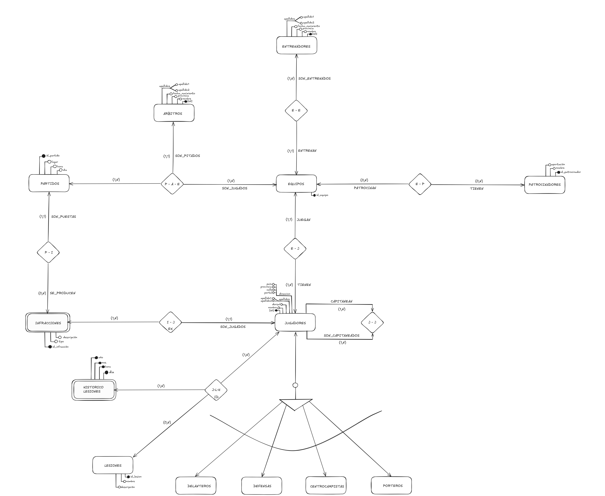
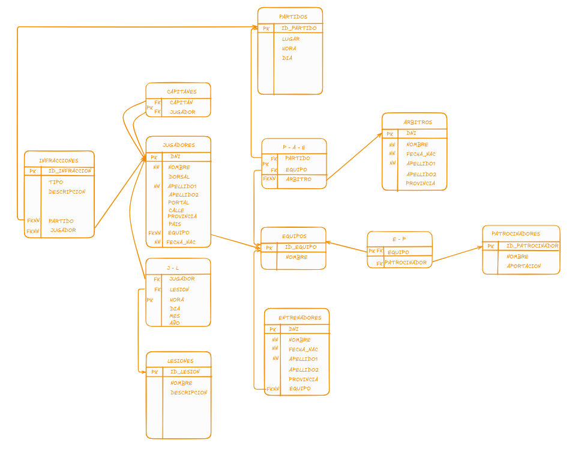
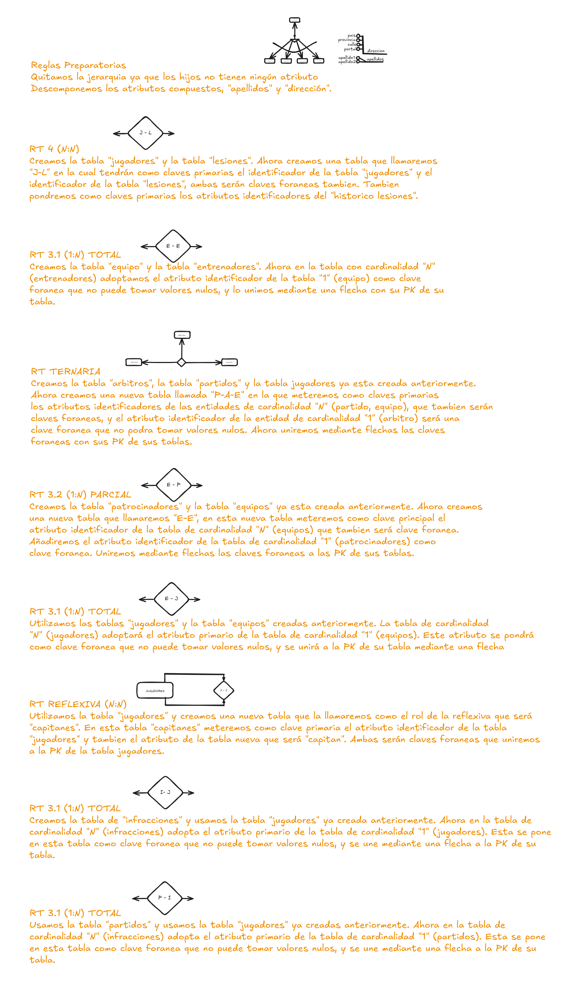
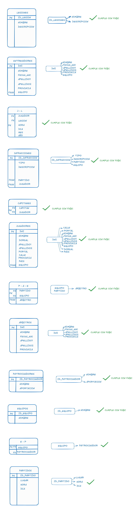

MODELO E/R
Este es el modelo entidad-relación que he desarrollado para mi proyecto de bases de datos. He diseñado este modelo a partir de un enunciado propio, pensado específicamente para cubrir las necesidades y los casos de uso planteados en el trabajo. A continuación, se detallan las entidades, relaciones y atributos creados para representar de forma estructurada la información y facilitar su gestión en la base de datos. Aqui pongo el enunciado:
Una liga de futbol quiere guardar la información de los equipos que
tienen.
Cada equipo puede tener uno o varios entrenadores, de los cuales queremos
guardar sus datos personales.
Tambien queremos guardar los datos de los jugadores de cada equipo (dni,
nombre,apellidos,direccion,dorsal)
Queremos ver tambien la fecha, lugar y equipos que participan de los partidos.
En cada partido habra uno o mas arbitros, de estos queremos saber
sus datos personales
Cada equipo puede tener o no tener patrocinadores, de los cuales queremos
guardar su nombre y precio que le paga al equipo.
- Cada equipo tiene que tener un capitan maximo y obligatorio
- Queremos guardar las lesiones que tienen los jugadores (descripción,
nombre)
- Un jugador solo puede estar en un solo equipo
- Queremos saber tambien si los jugadores son porteros, defensas,
centrocampistas o delanteros. Solo juegan en una sola posicion
- Queremos guardar informacion de las infracciones que les ha puesto
un arbitro a un jugador y en que partido, estas infracciones son
tarjetas amarillas y tarjetas rojas
TRANSFORMACIÓN
Aqui esta el resultado de aver transformado el modelo E/R que hemos hecho anteriormente, he ido paso a paso usando las reglas de transformacion
correspondientes, y antes aver usado las reglas preparatorias.

Aqui explico paso por paso la regla de transformación empleada y la forma en la que he transdormado.
NORMALIZACIÓN
Ahora mediante la normalización he comprobado que haya realizado bien la transformación usando el metodo de Forma normal de Boyce-Codd